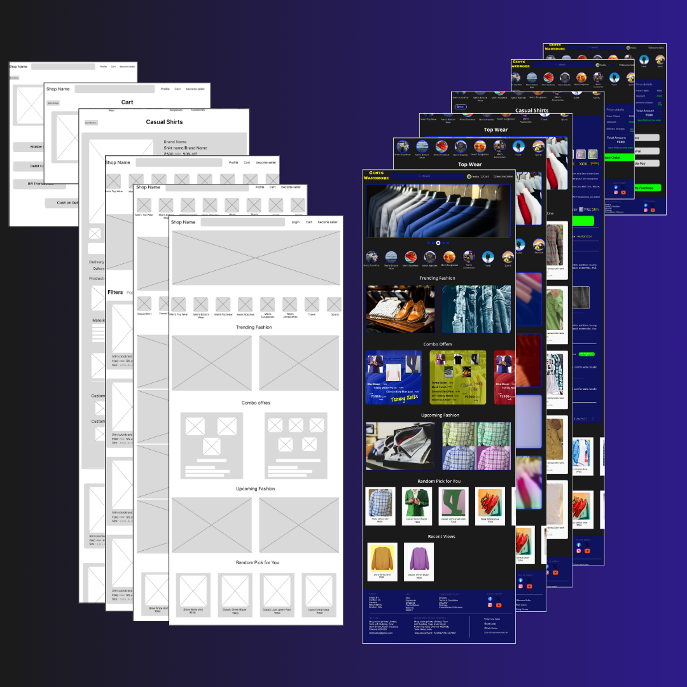

Currently Working
In this UX/UI project, I am currently working on a photo editing web application that
provides users with tools for cropping, adding effects, background removal, and drawing etc....
The project includes features for real-time editing and a seamless user experience.
Tools being used include Miro & Figma for design, HTML, CSS for development, and JavaScript
for interactivity.

E-Commerce Site
In this UX/UI project, I Designed an eCommerce website focused on men's wear,
featuring key pages such as Login, Home, Categories (Top Wear),
Product Listings (Casual Shirts), Product Page, Cart, Address, Payment, and Order Success pages.
The design process began with a wireframe, followed by a fully interactive prototype.
The color scheme includes a black background,
navy blue and white for product listings, black and white text depending on the background,
yellow for the "Add to Cart" button,
and green for the "Place Order" button. This design prioritizes clear navigation and a seamless shopping experience.
Music App
In this UX/UI project, I designed a simple and intuitive
music app using a vibrant purple and yellow color scheme.
The app features six pages: Login, Home, Player, Lyrics,
Favorite Song, and Search. Each page was created with user
experience in mind, ensuring smooth navigation and
emphasizes ease of use and aesthetic appeal, aiming to
provide a seamless music discovery and listening experience.
Notable features include a personalized Favorites section
and an efficient search functio, enhancing overall user
engagement.
Food App
In this UX/UI project, I designed a food app using a fresh
green and white color scheme. The app features multiple pages,
including Login, Sign Up, Home, Restaurant, Food, Profile,
Cart, and Payment. Each Page was designed with user
convenience in mind , ensuring intuitive navigation and clean,
user-friendly interface. THe design aims to streamline the
food ordering process, providing users with a seamless and
enjoyable experience from browsing to checkout. Key elements
include an organized menu layout and efficient cart and
payment system to enhance user satisfaction.